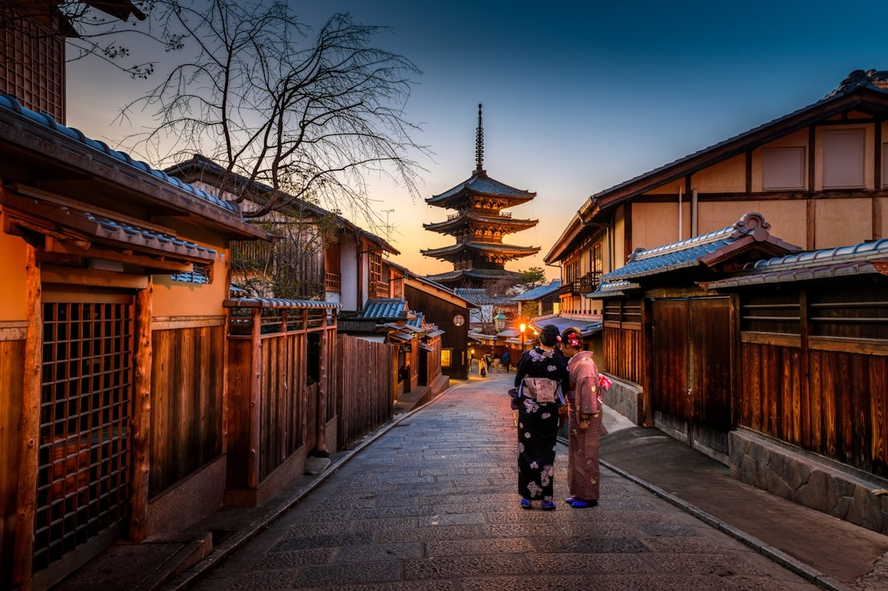
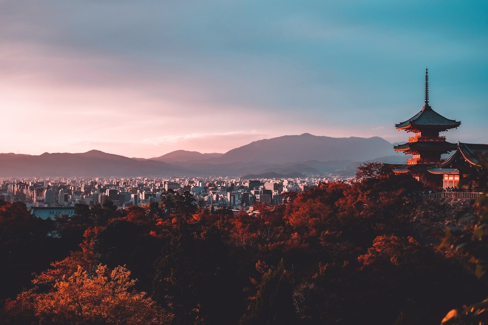

關西名景深度專題 ✕ 社群實戰指南庫
點擊下方地域標籤可即時篩選特定城市攻略。每篇均內含高清實拍、歷史傳奇典故、分步動線、名店菜單與 TripNG 實戰避坑矩陣。

🌲 海拔 848m 避暑 ✕ 雙傳奇登山纜車 ✕ 1200年不滅法燈🌲 比叡山延曆寺 848m 越嶺橫斷
京都 ✕ 滋賀叡電未來感觀光車 HIEI、全日最陡纜車登頂（22°C 涼溫）、根本中堂不滅法燈、全日最長坂本纜車俯瞰琵琶湖與 JR 新快速直達大阪。

🌲 京都洛北 ✕ 盛夏避暑 ✕ 宇宙靈氣 ✕ 川床香魚🌲 京都・鞍馬寺靈氣 ✕ 貴船神社川床香魚
京都・洛北叡電展望列車穿青楓隧道、牛若號纜車省力登頂、六芒星金剛床宇宙靈氣、牛若丸練劍木之根道、川床鹽烤香魚與神泉水占卜。
 Day 3 全日 ✕ 860m 避暑 ✕ 千年金湯 ✕ 神戶牛
Day 3 全日 ✕ 860m 避暑 ✕ 千年金湯 ✕ 神戶牛
🌲 神戶・六甲山 860m 避暑 ✕ 有馬溫泉金湯
兵庫・神戶昭和登山纜車、GREENIA空中運動、六甲枝垂（24°C 天然避暑）、空中索道直落有馬、金之湯足湯與 Mouriya 正宗神戶牛。
 🏯 兵庫備選特輯 ✕ 國寶第一名城
🏯 兵庫備選特輯 ✕ 國寶第一名城
🏯 國寶姬路城登大天守 ✕ 好古園活水軒
兵庫・姬路400年不滅純木造大天守閣、2026新票制（18歲以下免費）、三大黃金機位與好古園活水軒星鰻御膳。
 Day 2 上午 ✕ 海拔 1,174m 避暑
Day 2 上午 ✕ 海拔 1,174m 避暑
🌲 滋賀・琵琶湖露台 1,174m 漫步 ✕ 近江牛
滋賀・大津一面湖兩座山頭三趟纜車、打見山 Grand Terrace 無邊際水池、兩段高空吊椅無料搭乘、蓬萊山 CAFÉ 360 與近江牛美饌。
 Day 2 下午 ✕ 400年水鄉 ✕ 吉卜力草屋
Day 2 下午 ✕ 400年水鄉 ✕ 吉卜力草屋
🚣 滋賀・近江八幡水鄉手搖船 ✕ La Collina
滋賀・八幡400年八幡堀水鄉手搖船、《神劍闖江湖》取景舞台、藤森照信童話草屋頂、CLUB HARIE 現烤熱年輪蛋糕與千成亭 A5 近江牛。
 🎒 滋賀備選 ✕ 300年忍者機關屋
🎒 滋賀備選 ✕ 300年忍者機關屋
🥷 滋賀・甲賀之里忍術村（戶外闖關修練）
滋賀・甲賀適合國小～國中生親子動態放電！300年望月家暗器旋轉壁、土遁地道、實鐵手裏劍投擲與水蜘蛛輕功。
 🏯 三重特輯 ✕ 阿修羅真刀武打秀
🏯 三重特輯 ✕ 阿修羅真刀武打秀
🥷 三重・伊賀流忍者博物館 ✕ 伊賀上野城
三重・伊賀服部半藏發祥地！阿修羅真人熱血武打秀、女忍者機關屋敷、30m 日本第一高石垣白鳳城與松本零士彩繪電車。
 Day 4 上午 ✕ 關西第一勝運之寺
Day 4 上午 ✕ 關西第一勝運之寺
⛩️ 大阪・勝運之寺 勝尾寺 ✕ 滿山紅達摩
大阪・箕面萬隻紅達摩不倒翁海、六層套印紀念明信片、易經六十四卦達摩神籤與點睛許願開眼秘笈。
 Day 4 森林消暑 ✕ 日本瀑布百選
Day 4 森林消暑 ✕ 日本瀑布百選
🌊 大阪・箕面大瀑布 ✕ 溪谷森林步道
大阪・箕面大日停車場 10 分鐘下坡捷徑、33m 白絹飛瀑負離子、瀧安寺朱紅瑞雲橋與 1300 年炸楓葉名物。
 Day 1 下午 ✕ 173m 淀川落日
Day 1 下午 ✕ 173m 淀川落日
🏛️ 大阪・中之島文化水岸 ✕ 藍天大廈夕陽
大阪・中之島天下廚房堂島米市、岩本榮之助義商傳奇、安藤忠雄巨大青蘋果、原廣司1,000噸空中吊升奇蹟。
 Day 1 遲午餐 ✕ 15:00 避峰名店
Day 1 遲午餐 ✕ 15:00 避峰名店
🍕 中之島名店對決：GARB披薩 vs AWAKE蛋包飯
大阪・美食450°C 櫻木柴燒拿坡里瑪格麗特披薩 vs 1918 百年公會堂米其林主廚紅酒牛肉燴醬蛋包飯。
 Day 3 傍晚 ✕ 避開 90% 團客
Day 3 傍晚 ✕ 避開 90% 團客
🏯 大阪城傍晚水岸漫步 ✕ MIRAIZA 點燈
大阪・古蹟豐臣秀吉黃金城掩埋之謎、108噸第一巨石「蛸石」、1931陸軍古堡露台平視天守閣夜間金光。
🛍️ 大丸梅田最終採買：HARBS ✕ 小倉山莊退稅
大阪・梅田HARBS 8吋水果千層避峰攻略、寶可夢任天堂旗艦周邊、百人一首和歌仙貝、14:30前快速退稅。